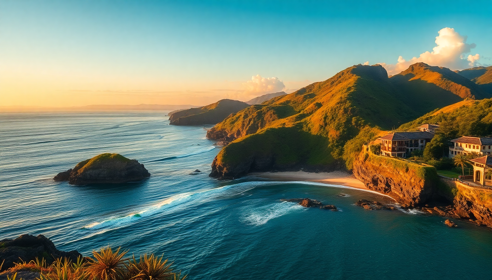

Best Beaches in Indonesia: Bali, Lombok, Komodo & Gili Islands

I spent three weeks island-hopping across Indonesia, and the beaches vary wildly—from crowded party strips to near-empty coves you reach by boat. Here’s what actually delivered, what didn’t, and where I’d send a friend.
Which beaches in Bali are worth the hype?
Bali’s coastline is oversold online, but a few spots lived up. Padang Padang near Uluwatu has that postcard turquoise water, but go early (before 9 AM) or you’ll queue. I liked Bingin Beach more—less crowded, better surf breaks, and the cliffside warungs serve fresh grilled fish for cheap. Sanur is the opposite: flat water, family-friendly, and a long boardwalk. It’s not dramatic, but it works for a lazy afternoon. Skip Kuta Beach entirely unless you want hawkers every two steps and brown sand.
- Padang Padang – small cove, best at low tide
- Bingin Beach – quieter, good for swimming and sunsets
- Sanur Beach – calm water, ideal for kids or non-swimmers
- Green Bowl Beach – hidden behind a steep staircase, nearly empty on weekdays
What’s the best beach in Lombok?
Lombok feels like a calmer, less developed version of Bali. Kuta Lombok (not to be confused with the Bali mess) has a long stretch of white sand with hardly any vendors. I stayed at Novotel Lombok right on the beach—affordable, clean, and the pool overlooks the water. For something more remote, Mawun Beach is a perfect crescent bay surrounded by hills. It’s a 30-minute scooter ride from Kuta, and there’s one warung selling cold Bintangs. Selong Belanak is the spot for beginner surf lessons; the waves break gently and the beach bar Elak Elak does a decent nasi goreng.
- Kuta Lombok – wide beach, good for long walks
- Mawun Beach – secluded, best for photos
- Selong Belanak – surf lessons, gentle waves
- Tanjung Aan – two bays divided by a hill, excellent snorkeling
Which beaches in Komodo National Park should I prioritize?
Komodo isn’t about lounging—it’s about raw, dramatic coastline. Pink Beach (there are several, but the one near Padar Island) has genuinely pink sand from red coral fragments. The snorkeling there is excellent: I saw turtles and reef sharks within ten minutes. Padar Island itself isn’t a beach you swim at, but the viewpoint hike gives you a three-bay panorama that’s worth the sweat. Kanawa Island has a small beach with calm water and a simple resort where you can stay overnight. For actual swimming, Long Beach on Rinca Island is quiet and rarely crowded.
- Pink Beach (Padar) – pink sand, good snorkeling
- Kanawa Island – overnight stay possible, clear water
- Long Beach (Rinca) – quiet, no crowds
- Manta Point – not a beach, but a snorkel site where mantas clean
What are the beaches like on the Gili Islands?
Each Gili has a different personality. Gili Trawangan is the party island—the beach along the main strip is lined with bars and beanbags. I found the water quality average, but the sunset at Ombak Sunset was solid. Gili Air is my favorite: quieter, better snorkeling right off the sand, and fewer loud parties. I ate at Scallywags twice—their seafood platter is legit. Gili Meno is the sleepiest, with the best swimming beach (the one near the turtle sanctuary). If you want total quiet, stay at Meno Dream Resort—basic but right on the sand.
- Gili Trawangan – nightlife, busy, sunsets
- Gili Air – balanced mix of chill and activity
- Gili Meno – most relaxed, best swimming
- Turtle Point (Gili Meno) – snorkel with turtles, no boat needed
When is the best time to visit these beaches?
Dry season (April to October) is the window. I went in June and had perfect weather across all four areas. July and August are busiest and priciest—hotels like Novotel Lombok double their rates. Wet season (November to March) brings rain and rough seas; ferry crossings between Lombok and the Gilis get canceled often. If you’re flexible, May or September give you good weather with fewer tourists.
- April–June – less rain, lower prices, good visibility
- July–August – peak season, book months ahead
- September–October – still dry, crowds thin out
- November–March – avoid for beach hopping, okay for surfing
How do I get between these islands without wasting time?
Fly into Bali, then take a short flight to Lombok (LOP) or Labuan Bajo (LBJ) for Komodo. For the Gilis, public ferries from Padang Bai in Bali run daily—I used Eka Jaya and it was fine, about 2 hours to Gili T. Between Lombok and the Gilis, speedboats from Bangsal Harbor take 20 minutes. For Komodo, most tours depart from Labuan Bajo; I booked a 2-day liveaboard through Kanawa Island Tours and it covered all the key beaches plus dragon trekking.
- Bali to Gili Islands – ferry from Padang Bai
- Bali to Lombok – 25-minute flight or 4-hour ferry
- Lombok to Gili Islands – speedboat from Bangsal
- Bali to Komodo – fly to Labuan Bajo (1.5 hours)
FAQ
Which beach in Indonesia is best for beginner snorkeling? Gili Air has shallow, calm water with coral and turtles right off the beach. You don’t need a boat. The area near Scallywags restaurant is a good entry point.
Are the Pink Beaches in Komodo actually pink? Yes, but it’s subtle—more blush than bubblegum. The sand gets its color from crushed red foraminifera. Best seen around midday when the light hits directly.
Is Kuta Bali worth visiting for beaches? No. The sand is dark, the water is murky, and the beach is packed with vendors. If you’re in Bali for beaches, stick to Uluwatu or Sanur.
Conclusion
- Bali – stick to Uluwatu beaches (Padang Padang, Bingin) and skip Kuta.
- Lombok – Kuta Lombok and Mawun Beach offer quieter, cleaner alternatives.
- Komodo – Pink Beach and Padar Island are non-negotiable; book a liveaboard.
- Gili Islands – Gili Air for the best balance, Gili Meno for swimming, Gili T for nightlife.
- Timing – May and September hit the sweet spot for weather and crowds.